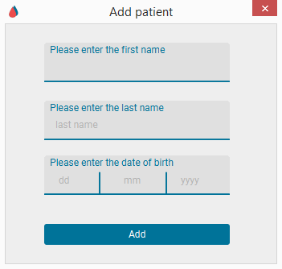
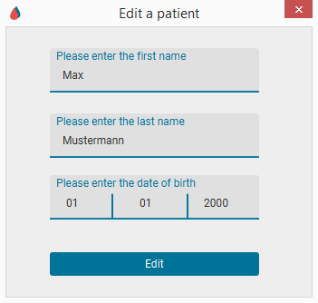
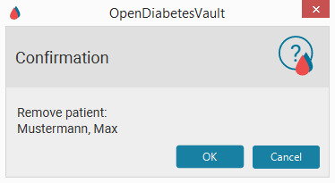

Patient Selection - Help
1. Selecting a Patient
- By clicking on one of the rows from the table, the selected patient's name
should appear in the application title.
- Alternativly use a doubleklick to select a patient
and switch directly to the import area.
- Use the searchbar to look up specific patient entries.
2. Adding a Patient
- Click
- Enter first name, last name and date of birth.
- Click "Add".

3. Editing a Patient
- Select a patient entry.
- Click
- Change the first name, last name or the date of birth.
- Click "Edit".

4. Deleting a Patient
- Select a patient.
- Click
- Click "OK".
